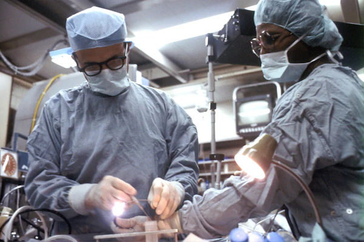
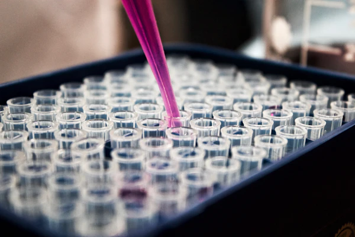

Elevating Diagnostic Integrity with Clinical Precision
Founded on rigorous methodology and compassionate patient care, Apex Diagnostics provides healthcare providers and patients with the reliable analytical clarity necessary for informed decisions.
Bridging Clinical Excellence with Modern Analytical Technology
At Apex Diagnostics, we recognize that behind every specimen tube, tissue biopsy, or blood smear lies a person seeking answers, reassurance, and proactive guidance.
Established as an independent diagnostic reference laboratory, our facility was created to overcome common bottlenecks in outpatient diagnostic medicine: delayed turnaround times, opaque preparation guidelines, and fragmented report delivery.
By combining high-throughput clinical chemistry analyzers, molecular PCR platforms, and automated hematology tracks with an intuitive digital portal, we deliver rapid, reproducible, and verifiable laboratory parameters to clinicians and patients alike.

Clinical Quality Standard
Daily Multi-Level Blind Quality ControlMission and Vision
Dedicated to clinical truth, operational accountability, and accessible healthcare data.
Our Mission
To deliver accurate, reproducible, and rapid diagnostic testing services through advanced analytical instrumentation, rigorous quality assurance, and compassionate patient interactions, empowering clinicians to make timely medical decisions.
Our Vision
To set the benchmark for modern diagnostic pathology by seamlessly integrating cutting-edge laboratory automation with secure, patient-friendly digital health interfaces that put clinical insights directly into patients' hands.
Our Diagnostic Approach
A disciplined continuum from pre-analytical collection to post-analytical review.
Pre-Analytical Vigilance
Over 70% of laboratory errors occur prior to sample testing. We enforce strict barcoded accessioning, sterile needle vacuum collection, and temperature-controlled specimen triage.
Analytical Precision
Our automated biochemistry and immunoassay analyzers operate with dual internal standards, closed-tube sampling, and continuous photometric calibration to minimize variance.
Post-Analytical Oversight
Critical analyte values and anomalous readings automatically trigger reflexive delta-checks and manual review by senior laboratory staff before publication to the portal.
Quality Assurance Process
Systematic protocols that ensure consistent, verifiable, and reproducible diagnostic results.
Daily Calibration
Multi-point instrument calibration performed each morning using certified reference calibration standards.
Barcode Chain of Custody
Unique alphanumeric identifiers tied to every tube, preventing cross-specimen misidentification.
Reflexive Delta Checking
Automated algorithms flag dramatic deviations from a patient's historical baseline for re-examination.
Cold-Chain Monitoring
Continuous digital telemetry loggers inside all reagent refrigerators and bio-repository units.

Ergonomic Care
Dedicated Private Phlebotomy SuitesPatient-Centered Care in an Advanced Clinical Setting
Diagnostic tests should never be an intimidating or uncomfortable ordeal.
Our outpatient reception and collection rooms are purposefully engineered with calm acoustic shielding, ergonomic collection chairs, and private consultation booths. Certified phlebotomists utilize micro-gauge needles and pediatric-grade collection techniques for minimal discomfort.
For patients requiring fasting morning profiles, our specimen collection stations open promptly at 06:30 AM, allowing prompt testing with minimal disruption to your daily schedule.
Our Laboratory Team
Dedicated professionals committed to analytical quality and clinical insight. (Illustrative Demo Staff Profiles)
Dr. Julian Ross
Specializes in clinical pathology governance, laboratory instrumentation, and laboratory quality control.
Dr. Elena Rostova
Focuses on histopathology, cellular cytology, and abnormal hematologic morphology evaluations.

Dr. Marcus Vance
Leads automated clinical chemistry pipelines, metabolic panels, and therapeutic drug monitoring.
Clara Sterling
Directs outpatient sample collection, patient comfort protocols, and sterile pre-analytical handling.